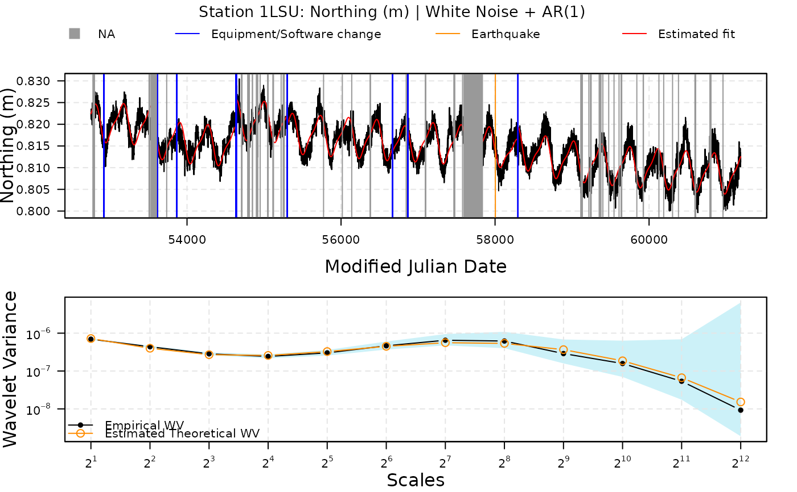
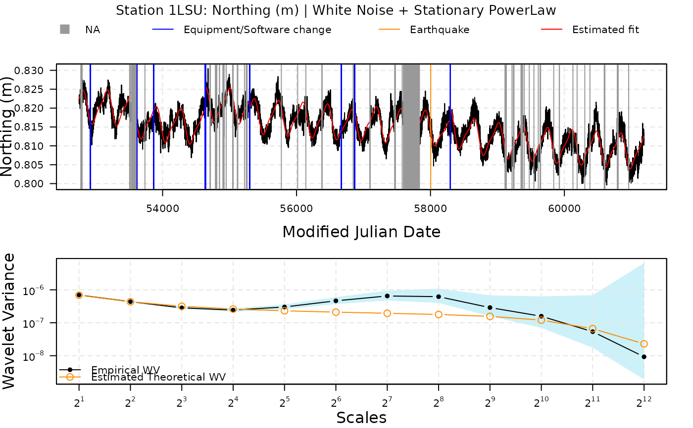
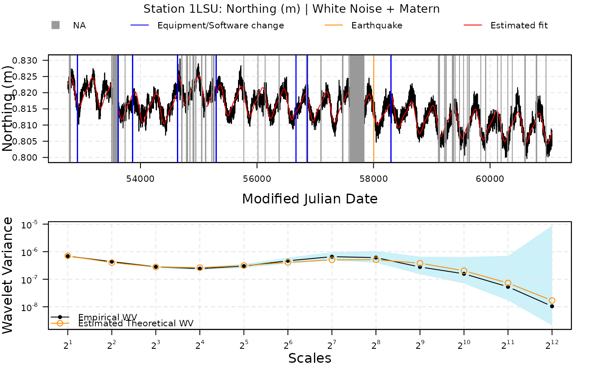

Plot a gmwmx2_fit_gnss_ts_ngl object
# S3 method for class 'gmwmx2_fit_gnss_ts_ngl'
plot(x, ...)No return value. Plot a gmwmx2_fit_gnss_ts_ngl object.
station_data = gmwmx2::download_station_ngl("1LSU")
# fit station with WN and AR1
fit1 <- gmwmx2_new(
station_data,
n_seasonal = 2,
model = wn() + ar1(), component = "N"
)
fit1
#> GMWMX fit GNSS Times Series (Nevada Geodetic Laboratory)
#> Estimate Std.Error CI.Lower CI.Upper
#> Intercept 8.156e-01 2.265e-03 8.112e-01 8.200e-01
#> Trend -1.090e-06 4.736e-07 -2.018e-06 -1.613e-07
#> Sin (Annual) -5.216e-04 2.248e-04 -9.623e-04 -8.096e-05
#> Cos (Annual) -4.129e-03 2.264e-04 -4.573e-03 -3.685e-03
#> Sin (Semi-Annual) 1.089e-03 1.493e-04 7.964e-04 1.382e-03
#> Cos (Semi-Annual) -4.455e-04 1.494e-04 -7.384e-04 -1.526e-04
#> Jump: MJD 52920 4.958e-04 1.369e-03 -2.187e-03 3.179e-03
#> Jump: MJD 53619 -3.057e-03 1.254e-03 -5.514e-03 -5.996e-04
#> Jump: MJD 53866 -5.586e-04 1.247e-03 -3.003e-03 1.886e-03
#> Jump: MJD 54637 -2.499e-04 2.009e-03 -4.187e-03 3.687e-03
#> Jump: MJD 54640 6.393e-03 2.010e-03 2.453e-03 1.033e-02
#> Jump: MJD 55300 -2.496e-03 9.734e-04 -4.404e-03 -5.887e-04
#> Jump: MJD 56671 -1.193e-03 1.302e-03 -3.745e-03 1.359e-03
#> Jump: MJD 56868 1.120e-03 1.297e-03 -1.421e-03 3.661e-03
#> Jump: MJD 58298 3.321e-03 1.969e-03 -5.392e-04 7.181e-03
#> Jump: MJD 58004 1.137e-03 1.484e-03 -1.771e-03 4.045e-03
#> Earthquake: MJD 58004 -7.135e-03 3.385e-03 -1.377e-02 -5.004e-04
#>
#> Missingness model
#> Proportion missing : 0.0584
#> p1 : 0.0073
#> p2 : 0.1173
#> p* : 0.9416
#>
#> Stochastic model
#> Sum of 2 processes
#> [1] White Noise
#> Estimated parameters : sigma2 = 1.434e-06
#> [2] AR(1)
#> Estimated parameters : phi = 0.9803, sigma2 = 1.35e-07
#>
#> Runtime (seconds)
#> Total : 2.5764
plot(fit1)

# fit station with WN and PL
fit2 <- gmwmx2_new(
station_data,
n_seasonal = 2,
model = wn() + pl(), component = "N"
)
fit2
#> GMWMX fit GNSS Times Series (Nevada Geodetic Laboratory)
#> Estimate Std.Error CI.Lower CI.Upper
#> Intercept 8.156e-01 5.477e-01 -0.2579751 1.889e+00
#> Trend -1.090e-06 1.409e-05 -0.0000287 2.652e-05
#> Sin (Annual) -5.216e-04 8.215e-03 -0.0166236 1.558e-02
#> Cos (Annual) -4.129e-03 8.217e-03 -0.0202335 1.198e-02
#> Sin (Semi-Annual) 1.089e-03 7.895e-03 -0.0143853 1.656e-02
#> Cos (Semi-Annual) -4.455e-04 7.894e-03 -0.0159180 1.503e-02
#> Jump: MJD 52920 4.958e-04 4.478e-02 -0.0872787 8.827e-02
#> Jump: MJD 53619 -3.057e-03 3.896e-02 -0.0794085 7.329e-02
#> Jump: MJD 53866 -5.586e-04 3.867e-02 -0.0763420 7.522e-02
#> Jump: MJD 54637 -2.499e-04 1.278e-01 -0.2507630 2.503e-01
#> Jump: MJD 54640 6.393e-03 1.279e-01 -0.2442113 2.570e-01
#> Jump: MJD 55300 -2.496e-03 2.860e-02 -0.0585493 5.356e-02
#> Jump: MJD 56671 -1.193e-03 4.113e-02 -0.0818154 7.943e-02
#> Jump: MJD 56868 1.120e-03 4.103e-02 -0.0793035 8.154e-02
#> Jump: MJD 58298 3.321e-03 6.715e-02 -0.1282987 1.349e-01
#> Jump: MJD 58004 1.137e-03 4.528e-02 -0.0876168 8.989e-02
#> Earthquake: MJD 58004 -7.135e-03 1.118e-01 -0.2262608 2.120e-01
#>
#> Missingness model
#> Proportion missing : 0.0584
#> p1 : 0.0073
#> p2 : 0.1173
#> p* : 0.9416
#>
#> Stochastic model
#> Sum of 2 processes
#> [1] White Noise
#> Estimated parameters : sigma2 = 8.165e-07
#> [2] Stationary PowerLaw
#> Estimated parameters : kappa = -1, sigma2 = 9.707e-07
#>
#> Runtime (seconds)
#> Total : 1.7143
plot(fit2)

# fit station with WN and Matern
fit3 = gmwmx2_new(
station_data,
n_seasonal = 2,
model = wn() + matern(), component = "N"
)
fit3
#> GMWMX fit GNSS Times Series (Nevada Geodetic Laboratory)
#> Estimate Std.Error CI.Lower CI.Upper
#> Intercept 8.156e-01 2.384e-03 8.109e-01 8.203e-01
#> Trend -1.090e-06 5.036e-07 -2.077e-06 -1.026e-07
#> Sin (Annual) -5.216e-04 2.183e-04 -9.495e-04 -9.373e-05
#> Cos (Annual) -4.129e-03 2.204e-04 -4.561e-03 -3.697e-03
#> Sin (Semi-Annual) 1.089e-03 1.398e-04 8.150e-04 1.363e-03
#> Cos (Semi-Annual) -4.455e-04 1.400e-04 -7.198e-04 -1.711e-04
#> Jump: MJD 52920 4.958e-04 1.409e-03 -2.266e-03 3.258e-03
#> Jump: MJD 53619 -3.057e-03 1.308e-03 -5.621e-03 -4.928e-04
#> Jump: MJD 53866 -5.586e-04 1.303e-03 -3.111e-03 1.994e-03
#> Jump: MJD 54637 -2.499e-04 2.006e-03 -4.181e-03 3.681e-03
#> Jump: MJD 54640 6.393e-03 2.007e-03 2.459e-03 1.033e-02
#> Jump: MJD 55300 -2.496e-03 1.037e-03 -4.529e-03 -4.640e-04
#> Jump: MJD 56671 -1.193e-03 1.355e-03 -3.848e-03 1.462e-03
#> Jump: MJD 56868 1.120e-03 1.348e-03 -1.521e-03 3.762e-03
#> Jump: MJD 58298 3.321e-03 2.012e-03 -6.216e-04 7.263e-03
#> Jump: MJD 58004 1.137e-03 1.571e-03 -1.941e-03 4.216e-03
#> Earthquake: MJD 58004 -7.135e-03 3.512e-03 -1.402e-02 -2.511e-04
#>
#> Missingness model
#> Proportion missing : 0.0584
#> p1 : 0.0073
#> p2 : 0.1173
#> p* : 0.9416
#>
#> Stochastic model
#> Sum of 2 processes
#> [1] White Noise
#> Estimated parameters : sigma2 = 1.366e-06
#> [2] Matern
#> Estimated parameters : sigma2 = 3.509e-06, lambda = 0.01456, alpha = 0.8928
#>
#> Runtime (seconds)
#> Total : 2.1924
plot(fit3)
